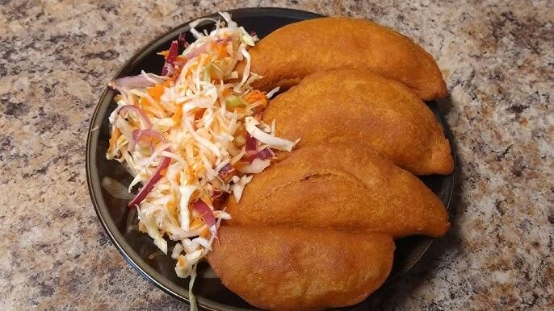
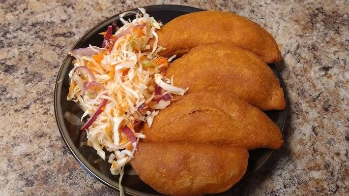

Comida Tipica de El Salvador
La comida típica de El Salvador es una expresión de su cultura, tradición y sabor. Cada platillo muestra la riqueza de sus raíces indígenas y la fusión con la cocina de la colonia, dando lugar a una gastronomía única y llena de identidad. Desde las tradicionales pupusas hasta los tamales, la cocina salvadoreña es una invitación a disfrutar de sabores auténticos y recetas que han pasado de generación en generación. En este sitio, te llevaremos a conocer los platos más representativos del país, su historia y sus ingredientes.
Historia de la Gastronomía Salvadoreña
La gastronomía salvadoreña se remonta a las antiguas civilizaciones indígenas, especialmente la cultura pipil, que basaba su alimentación en ingredientes como el maíz, el frijol, el ayote y hierbas locales. Estos elementos formaban la base de una cocina sencilla pero nutritiva. Con la llegada de los españoles en el siglo XVI, se introdujeron nuevos ingredientes como el trigo, el arroz, productos lácteos y diversas carnes. Esta mezcla dio origen a una gastronomía mestiza, donde recetas tradicionales como las pupusas, tamales y sopas reflejan siglos de historia y cultura.
Imágenes

 
